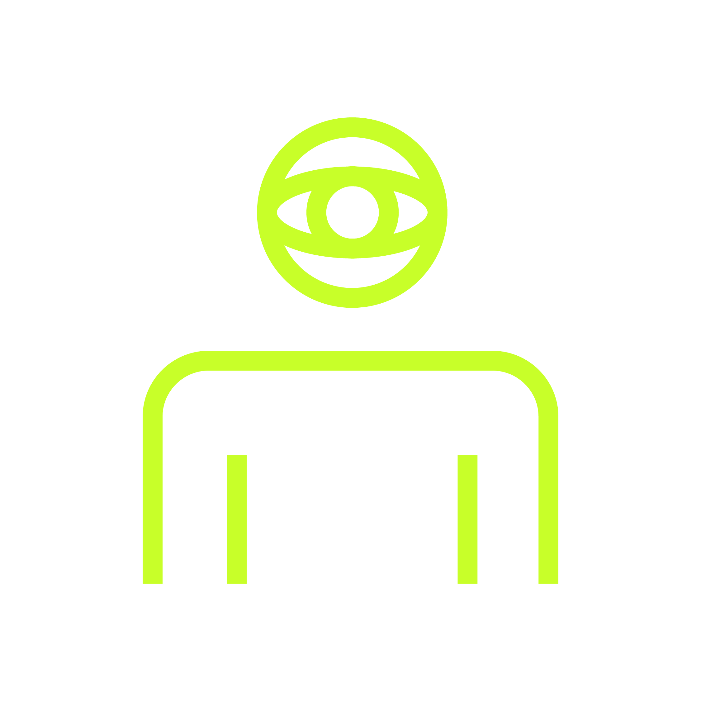

>>
CUSTOMER JOURNEY WORKSHOP
>>
LAB · CxbD
Results
Customer
Journey.
Cómo lo vive el cliente hoy — y cómo lo va a vivir.
4 grupos · 4 arquetipos · AS-IS → TO-BE validado
Cliente · Programa · Mes Año

AGCS | Studio + Lab |
>>
STAY FORWARD